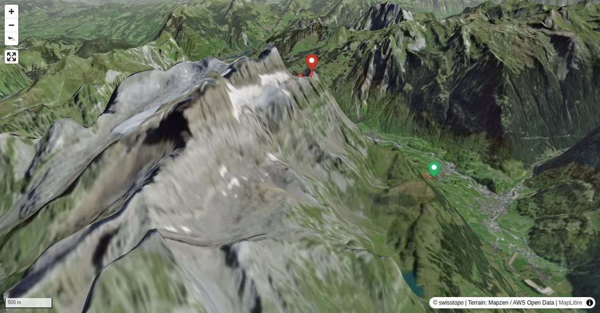

Vorder Glärnisch is for alpine hikers what Glärnisch is for climbers: an exciting tour to a fabulous viewpoint. The view down to Glarus from Vorder Glärnisch is even more impressive than from Vrenelisgärtli. The city of Glarus burnt down 150 years ago and was rebuilt as a planned city with a geometrical street layout, which, viewed from the summit, looks like a scale model. The ascent on the steep south face with its two huge gullies is more interesting than the usual white-blue marked route on the barren north face which has scree and rubble.
Schwändi – Schwänder Siene - Furggle - Vorder Glärnisch: 4–5 h
Quick Facts
| Summit elevation | 2327 m |
|---|---|
| Difficulty | SAC T5+ Check the route notes below for terrain and commitment level. Guide |
| Trailhead | Schwändi b. Schwanden GL, Post |
| Region | Eastern Switzerland |
| Canton | Glarus |
| Distance | 11.9 km (out-and-back) |
| Total ascent | ~1626 m |
| Elevation range | 701-2327 m |
| Route sources | SAC Route Portal |
Photos


Planning
i
i
sac_scale (precise T1–T6) with
swissTLM3D Wanderwegart
fallback where OSM is silent (coarser T2/T3 and T4+ buckets).
Coverage: OSM 54.8% · swisstopo 7.7% · unknown 36.5%.Elevations computed from the inlined GPX track (SwissTopo height API).
Loading forecast…
Start: Schwändi b. Schwanden GL, Post (701 m)
End: Klöntal, Rhodannenberg (850 m)
3D Terrain View

Route Details
Traverse from Schwändi to Klöntalersee
- Schwändi – Schwänder Siene - Furggle - Vorder Glärnisch: 4–5 h Vorder Glärnisch - Gleiter - Sackberg - retaining wall of Klöntalersee (Rhodannenberg): 2–3 h
Terrain & safety
Finding your way on the south side is not trivial in poor visibility. But with good visibility, the right itinerary is relatively easy to find through the ledges: if you have to climb seriously somewhere, you are surely wrong. Key passages are the amazingly easy to master rock towers of the "Chilchli"( T4+). And the crossing of the Hanslirus (T5-), depending on the condition of the faint path and wetness, which can be difficult or even impossible, as the ground is somewhat loose (T5+). The descent via the blue-white-blue marked normal route to Saggberg is easy to find and equipped with wire ropes at all tricky points (T4-).
Source: SAC Route Portal
Field Reference
| Trailhead | Schwändi b. Schwanden GL, Post | 47.00570, 9.06670 |
|---|---|---|
| Summit | Vorder Glaernisch (2327 m) | 47.02203, 9.04111 |
Coordinates are WGS84 decimal degrees (lat, lon). Emergency: 112 (general) or 1414 (Rega air rescue). Page URL: